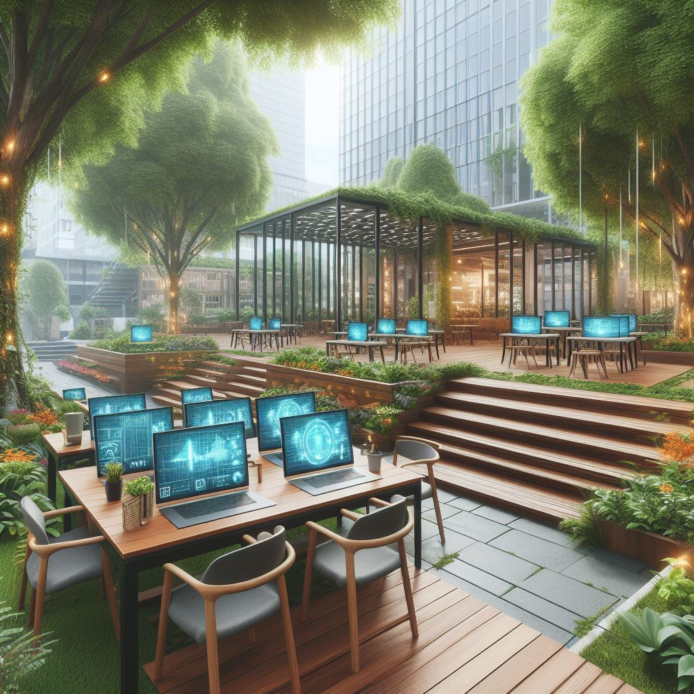

Mes Projects d'Etudes
Après avoir obtenu mon baccalauréat avec les spécialités en mathématiques et NSI (Numérique et Sciences de l’informatique), j’ai choisi de poursuivre mes études en BUT informatique à l’IUT2 de Grenoble. Mon objectif était de développer mon intérêt pour cette matière et d’explorer les différentes opportunités qu’elle pouvait offrir.
Cliquez sur les cartes ci-dessous pour découvrir les projets que j’ai réalisés.

B.U.T.1
Projects de ma première année d'études.
B.U.T.2
Projects de ma deuxième année d'études.

B.U.T.3
Projects de ma troisième année d'études.